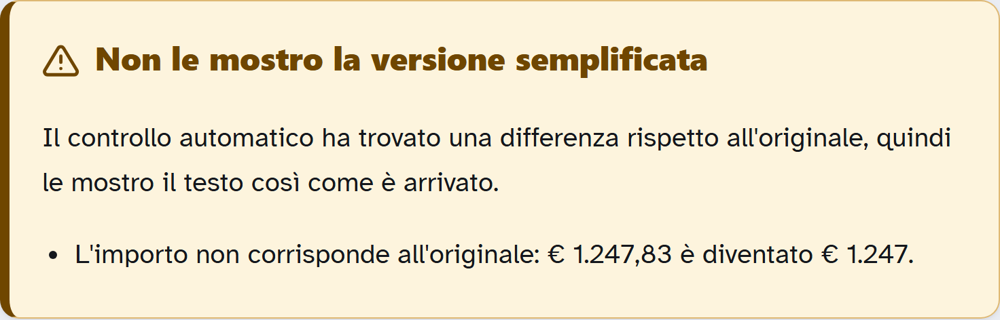

Posta Chiara
accanto a chi si ferma davanti al riquadro bianco
Il problema
Maria, 74 anni. Preme Rispondi e si blocca.
La soluzione
Sei agenti in pipeline. La risposta si sceglie, non si scrive.
La garanzia
FactGuard: codice deterministico, mai un LLM.
Maria, 74 anni
Ogni dettaglio impone un vincolo tecnico. Se non impone nulla, l'abbiamo tolto.
| Dettaglio | Vincolo che impone |
|---|---|
| Tremore, artrosi | Target ≥ 44px · niente drag, niente doppio clic |
| Cataratta iniziale | Contrasto ≥ 7:1 · base 20px |
| Vocali WhatsApp, non digita | La risposta si sceglie, non si scrive |
| Tablet 10″ sul tavolo | Colonna singola, niente menu a scomparsa |
| Mai usato le cartelle | Una sola lista piatta, zero gerarchie |
Il momento esatto in cui si ferma
Apre la mail della dott.ssa Bianchi: le chiede di confermare la visita del 14 ottobre.
Preme Rispondi.
Davanti a lei, un riquadro bianco vuoto.
Chiude tutto e aspetta domenica, quando viene Luca.
Prima: domenica prossima.
Ora: 4 minuti.
Prima — non una schermata brutta: un fallimento
- Preme Rispondi, riquadro bianco
- L'email non parte
- Attesa fino a domenica: 6 giorni
- Autonomia guadagnata: zero
Dopo — una risposta inviata
- Legge Chi · Cosa · Entro quando
- Sceglie l'intento: «Confermo»
- Rilegge e preme invia
- Tempo totale: 4 minuti

Nel prodotto Maria vede un contatore: «Risposte inviate da sola». L'autonomia è misurata, non promessa.
L'architettura agentica
Il team che ha costruito il team
state/progress.json
Developers
dev-core · dev-pipeline · dev-frontend · dev-corpus · dev-deckQA
test-engineer · qa-critic (sola lettura suapp/)Review
bando-compliance — audit contro i 4 file del bandoHuman gate
La persona, a 3 checkpoint di faseAbbiamo scritto prima gli agenti, poi gli agenti hanno scritto l'app.
- Confine di file disgiunto per ogni agente: lavorano in parallelo senza collidere
- I prompt in
agents/runtime/prompts/sono caricati dal codice a runtime, non copiati dentro - Conseguenza: la documentazione non può divergere dal comportamento — è lo stesso file
Il motore propone, il verificatore controlla, la persona decide.

DAL VIVO Schermata vera del prodotto. Il pulsante da presentatore «E se l'AI sbaglia?» inietta la corruzione mentre guardate.
- Il verificatore non è un LLM: è codice deterministico. Un verificatore che allucina dà una garanzia falsa.
- Confronta date, importi, orari fra originale e versione semplificata.
- Fatto mancante, alterato o inventato → semplificazione rifiutata.
- Il fallback non è un errore: è l'originale con i punti chiave evidenziati.
- Nessuna semplificazione non verificata arriva mai sullo schermo di Maria.
HITL a due livelli
Nel prodotto
- Nessuna email parte senza che Maria abbia riletto e premuto invia
- Semaforo giallo → «chiedi a una persona di fiducia» + pulsante
- Nessun invio automatico, in nessun caso
Nella build
- Nessuna fase avanza senza che lo sviluppatore abbia approvato il gate
- 3 gate umani: T+1:15 · T+2:20 · T+2:30
- Registrati in
build-time/state/progress.json
La simmetria non è casuale: la stessa regola per chi usa il sistema e per chi lo costruisce.
Lo stato dei gate di build usa lo stesso pattern di stato esternalizzato del runtime: verificabile, non dichiarato.
Nessuna chiave, nessun codice di rete
off — il default
- Solo regole deterministiche, nessuna seam LLM attraversata
- 0 token per email
- La giuria clona ed esegue senza configurare nulla
replay — per mostrare la seam
- Attraversa tutta la seam: prompt caricato, input hashato, JSON validato con Pydantic, token contati, retry
- Solo il trasporto è sostituito
- FactGuard verifica un output che il codice non ha generato lui
- Nessuna dipendenza
anthropic, nessun client HTTP in tuttoapp/. Non è disattivato: non esiste. - Un test scansiona staticamente i sorgenti e lo dimostra a ogni esecuzione della suite.
Le fixture di replay sono output di esempio scritti in fase di sviluppo, non registrazioni di chiamate API. Non volevamo una chiave in un repository pubblico.
Validazione
| Originale | Sintesi Chi/Cosa/Entro quando | |
|---|---|---|
| em-01 | 57,5 | 90,1 — molto facile |
| em-02 | 64,7 | 68,0 |
| em-04 | 48,7 | 49,8 |
- Onestà sul dato: il corpo riscritto guadagna poco — 57,0 → 57,3 di media. Un motore a regole non può rifondere le frasi senza rischiare di tradirle.
- Il guadagno vero è nella sintesi Chi / Cosa / Entro quando, che è anche ciò che Maria legge per prima.
- Eseguire la pipeline sul corpus ha fatto emergere 4 falsi positivi veri, due dei quali della stessa famiglia: cecità alla negazione. L'INPS autentico finiva in phishing perché diceva «non richiede mai le credenziali», e la sua scheda diceva «Le chiedono di rispondere» perché diceva «non rispondere».
Limiti e rischi
Quello che il sistema non sa fare
- FactGuard verifica la presenza dei fatti, non il loro ruolo: non distingue «importo dovuto» da «importo già versato». È esattamente lì che serve la persona.
- La classificazione truffa non è infallibile: soglia deliberatamente prudenziale, nel dubbio dice «chiedi a una persona di fiducia», mai «è sicura».
- Dice cosa c'è scritto, mai cosa fare: niente contenuti clinici, fiscali o legali.
Quello che è fuori dallo scope
- Niente PEC, niente SPID, nessun modulo compilato.
- Il semplificatore a regole copre il burocratese ricorrente, non il testo libero arbitrario.
- Database in memoria: lo stato si azzera al riavvio.
- Casella simulata: nessuna integrazione IMAP reale.
Dove sta l'AI
L'AI ha progettato e scritto l'intero sistema: 9 agenti di build, i prompt, i contratti, i test.
Verificabile
Ogni decisione è codice leggibile, non un output da interpretare.
Ripetibile
Stesso input, stesso output. Sempre. Anche fra sei mesi.
A costo zero
0 token per email nel default. Il costo marginale di una casella è zero.
Privato
La posta sanitaria e previdenziale di una persona anziana non lascia il dispositivo.
A runtime il default è deterministico di proposito. La seam LLM esiste, è completa, e ve l'abbiamo mostrata attraversata.
Posta Chiara — accanto a chi si ferma davanti al riquadro bianco.